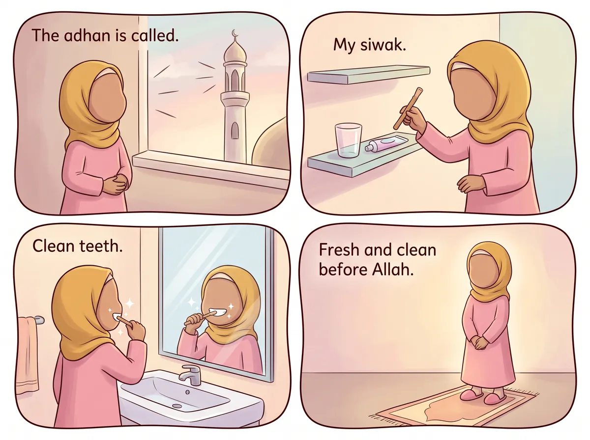
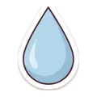

‹ সব হাদিস
মিসওয়াক দিয়ে দাঁত পরিষ্কার

عَنْ أَبِي هُرَيْرَةَ، أَنَّ رَسُولَ اللَّهِ ﷺ قَالَ: لَوْلَا أَنْ أَشُقَّ عَلَى أُمَّتِي لأَمَرْتُهُمْ بِالسِّوَاكِ عِنْدَ كُلِّ صَلَاةٍ
আমার সাথে বলো: লাওলা আন আশুক্ব্কা 'আলা উম্মাতী লাআমারতুহুম বিস-সিওয়াকি 'ইনদা কুল্লি সালাহ।
“আমার উম্মতের কষ্ট হবে—এই আশঙ্কা না থাকলে আমি তাদের প্রতি নামাজের আগে মিসওয়াক করার আদেশ দিতাম।”
বর্ণনায়: আবু হুরায়রা (রাঃ) · বুখারী ও মুসলিম
এর মানে আমার জন্য কী?
নবীজি ﷺ পরিষ্কার দাঁত ভালোবাসতেন! তিনি 'মিসওয়াক' নামের একটি ছোট্ট গাছের ডাল ব্যবহার করতেন। তিনি চাইতেন আমরা প্রতি নামাজের আগে দাঁত পরিষ্কার করি, কারণ আল্লাহর সামনে দাঁড়ানোর সময় আমাদের সতেজ ও পরিষ্কার থাকা উচিত।🔤 ৭টি শব্দ
শুনতে কার্ডে চাপ দাও
🔊
لَوْلَا
যদি না হতো
🔊

أَنْ أَشُقَّ
যে আমি কষ্ট দেব
🔊
عَلَى أُمَّتِي
আমার উম্মতকে
🔊
لأَمَرْتُهُمْ
আমি তাদের আদেশ দিতাম
🔊
بِالسِّوَاكِ
মিসওয়াক করতে
🔊
عِنْدَ
সময়
🔊
كُلِّ صَلَاةٍ
প্রতি নামাজের
⭐ চলো করে দেখি!
আজ নামাজের আগে দাঁত ব্রাশ করো (বা মিসওয়াক করো)।